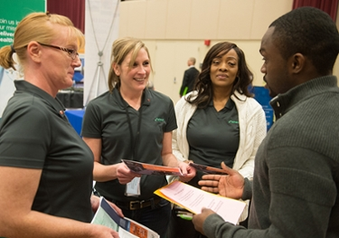

Employer
|
Sponsor a final project Sponsoring a final project is a great way to test students and lead them to become future employees. Our seniors are required to complete a final project and you can sponsor them. |
 Give a presentation
Give a presentationGive a presentation to our Civil Engineering students to educate them as well as get your company name out there. These presentations are a great way to find prospective students outside of career fairs. |
| 
Attend the Career Fair Every semester SIUE has a career fair where dozens of companies of all sizes compete to recruit our students. We look forward to seeing your company at the next fair. |